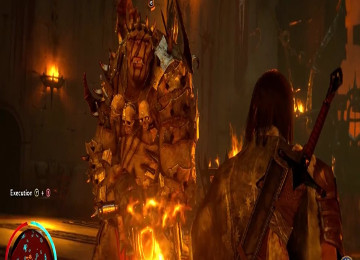
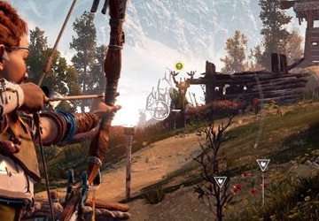
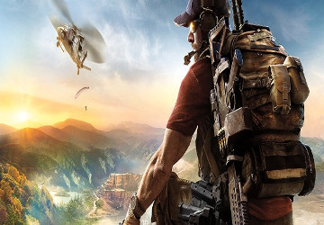

Brutal, épico e cheio de novidades: veja primeiro gameplay de Shadow of War
Postado em 22 fervereiro 2017 Após ser anunciado em pleno Carnaval aqui no Brasil, Middle-earth: Shadow of War, conforme prometido em teaser pela Warner e pela Monolith, ganha seu primeiríssimo gameplay. O título é a sequência do sucesso Middle-earth: Shadow of Mordor e foi traduzido em português para Terra-média: Sombras da Guerra. A continuação da saga de Talion promete evoluir todas as mecânicas que deram certo na aventura anterior, especialmente o sistema Nemesis, em que o jogador pode dominar e manipular um exército de orcs a seu favor – e no qual os embates criam uma "relação" entre o protagonista e o inimigo, que fica mais forte e se lembra de você quando ganha uma batalha. O melhor? O primeiro gameplay, assim como o trailer de anúncio, já está em português brasileiro! Confira: O jogo é ambientado durante os eventos que se desenrolam entre "O Hobbit" e "O Senhor dos Anéis". Terra-média: Sombras da Guerra estará disponível para Xbox One, Project Scorpio, PC (Windows Store e Steam), PlayStation 4 e PlayStation 4 Pro a partir de 22 de agosto deste ano. Conte suas expectativas para nós na seção destinada aos comentários, logo adiante!
Postado por Gabriel MaurilioHorizon: Zero Dawn é o maior lançamento de franquia nova do PS4
Postado em 22 fervereiro 2017 A aventura de Aloy realmente fisgou o coração dos fãs. E não é para menos: o ambicioso mundo aberto construído pela Guerrilla mostra que aquela talentosa equipe não vive só de shooters não. Muito pelo contrário: Horizon Zero Dawn representa, até agora, o maior lançamento de uma franquia do para o PS4. Trata-se do trabalho mais sólido da Sony desde Uncharted 4. No Reino Unido, os números são impressionantes: o game segue firme no primeiro lugar, à frente até de The Legend of Zelda: Breath of the Wild, que desponta na segunda posição. O quadro se refletia assim também nos EUA até semana passada. O invencível GTA 5, que ocupa a primeira posição há meses (ou quiçá anos), chegou agora a uma terceira colocação. For Honor, 1-2 Switch, FIFA 17, Super Bomberman R, Rocket League, Sniper Elite 4 e Battlefield 1 completam a lista. Se você ainda não conferiu nossa análise completa de Horizon: Zero Dawn, clique aqui. E conte para nós o que você está jogando no momento com essa onda de coisas boas!
Postado por Gabriel MaurilioCuriosidade mata? Novo Ghost Recon tem botão que não deve ser pressionado
Postado em 22 fervereiro 2017 Nos padrões atuais da indústria dos jogos, é difícil encontrar um game que não tenha um Easter Egg, aquelas brincadeiras que viram assunto em rodas de discussão por algum tempo. E, evidentemente, Ghost Recon: Wildlands não ficaria fora dessa lista. O vídeo que você confere mais abaixo é cortesia do usuário BUGZ-MAN-FR no YouTube, e mostra que há um botão em uma certa região do jogo que não deve ser pressionado – ou ao menos é o que diz a placa que está ao lado dele. O vídeo que você confere abaixo mostra onde esse botão está localizado, bem como aquilo que ele faz caso não obedeça a ordem que é dada. Confira:
Postado por Gabriel Maurilio